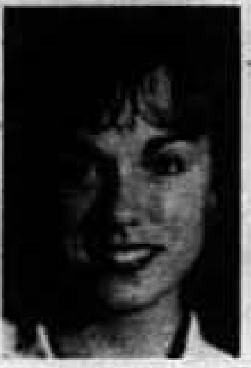

#
Few turn out for the election that chose Miller
The same Herald issue that declared "It's Kristen Miller's Time" also ran the headline "Few Turn Out for Election," continuing the decade's pattern of falling voter participation in SGA races.
Student Government Association · academic year

Confirmed by Herald 71:54 (18 Apr 1996, election coverage headlined "It's Kristen Miller's Time") and Herald 72:46 (27 Mar 1997, term-end reflection piece), both naming her SGA president in the plaque year.
Miller had been a Herald columnist and an SGA officer before winning the presidency; her letters in the paper defending the organization date to 1994. In her first weeks as president in August 1996 she made a plan to drive party-goers home, the beginning of what became the Provide-A-Ride service.
As student body president she was the student representative on the committee searching for WKU's ninth president. Interviewed in 2016, she recalled serious talk of cutting football or academic programs, saying "there was one pot of money everyone was fighting over," and described how a late-arriving alumnus candidate named Gary Ransdell impressed the committee by pulling out a binder full of plans after his interview.
In March 1997 the Herald ran "Kristen Miller Reflects on Year as Student Government Association President" as her term wound down. The SGA's 2001 list of presidents records Kristen L. Miller of Louisville as the 30th president and marks her as having also served as student regent.
Miller won the SGA presidency in April 1996 at the end of a four-way race, with the Herald's news coverage declaring 'It's Kristen Miller's Time.' A week earlier the paper had profiled her campaign under the headline 'Kristen Miller Focuses on Experience in Student Government Association.'
Days into the fall semester, the Herald reported 'Kristen Miller Makes Plan to Drive Party-Goers Home.' The idea became Provide-a-Ride, the safe-ride program that appears in SGA's minutes throughout 1996-97 and was still being funded by the congress years later.
Near the end of her term, the Herald ran 'Kristen Miller Reflects on Year as Student Government Association President,' looking back on a year that included the creation of a Technology Committee, the Provide-a-Ride launch and SGA's narrow vote to back adding sexual orientation to Western's anti-discrimination policy.
Sources for this account
Everything the archive holds on Kristen Miller, gathered on one page.
Everyone the record shows in office this year. Each name goes to their own page, with every office they held and everything the archive says they did.
Called every Congress meeting of the year to order, ran the residence hall elections and served as the student member of the OAR board. She stood for president in spring 1997 and lost to Keith Coffman, who thanked her from the floor for running a good campaign.
SGA Meeting Minutes, 22 Apr 1997Drew up the 1996-97 budget, cutting administrative costs and increasing organizational aid, the Glasgow campus budget, programme funding and campus improvements. Congress rejected a motion to table it and approved it on 27 August 1996.
SGA Meeting Minutes, 27 Aug 1996Signed the year's minutes and introduced a bulletin she called the Seconds, circulating important dates and highlights from the previous meeting. She also set herself the goal of tracking legislation after Congress passed it.
SGA Meeting Minutes, 27 Aug 1996Approved by Congress on a motion of David Apple at the first meeting of the year, 27 August 1996, after serving as secretary the previous year.
SGA Meeting Minutes, 27 Aug 1996Accepted by Congress as Coordinator of Committees on 21 January 1997, moving across from the Legislative Research chair.
SGA Meeting Minutes, 21 Jan 1997Set the year's theme and announced it at the first meeting; the minutes record it as "SGA- Changing the Course of History At WKU!" She ran the Provide-A-Ride publicity and organised an AIDS Day banner with Student Health Services in December 1996.
SGA Meeting Minutes, 27 Aug 1996Swore in the Congress members elected the previous spring at the opening meeting of 27 August 1996, and then swore in the newly approved members, after serving as vice president in 1995-96.
SGA Meeting Minutes, 27 Aug 1996Received one of the Public Relations awards handed out on 19 November 1996.
SGA Meeting Minutes, 19 Nov 1996Named with the parliamentarian as a Public Relations award winner on 19 November 1996.
SGA Meeting Minutes, 19 Nov 1996Met Charlie Wolfram of Facilities Management about campus lighting and recommended three pieces of legislation on it; Resolutions 96-5-F, 96-9-F and 96-10-F on lights near Gilbert, East and West Halls and the Diddle parking lot went to first reading on 19 November 1996. She was president two years later.
SGA Meeting Minutes, 19 Nov 1996Chaired LRC in the autumn of 1996 and gave his last remarks as chair on 21 January 1997, telling the bylaws committee that legislation could not be reviewed without an author present.
SGA Meeting Minutes, 21 Jan 1997Accepted by Congress as LRC chair on 21 January 1997; he also served as SGA's City Commission representative.
SGA Meeting Minutes, 21 Jan 1997Ran the Designated Driver card scheme and the spring campus clean-up, and worked with treasurer Steve Roadcap on the gazebo project. Elected vice president for the following year.
SGA Meeting Minutes, 22 Apr 1997Chaired the new Technology Committee and the Bylaws Committee. He built SGA's web page, surveyed peak usage of the computer labs, and was voted Congress Member of the Month in November 1996; he had also filled in as acting secretary and typed the minutes the week before.
SGA Meeting Minutes, 19 Nov 1996Created at the 17 September 1996 meeting to take up student email accounts and other technology questions.
The 15 things student government staged or ran for the campus this year, drawn from the chronology below. Every one of them also appears on the programmes page, which runs the whole sixty years together.
The same Herald issue that declared "It's Kristen Miller's Time" also ran the headline "Few Turn Out for Election," continuing the decade's pattern of falling voter participation in SGA races.
The Herald reported that an SGA retreat provided the opportunity for new discussion and legislation, setting the agenda for Kristen Miller's term before classes had fully begun.
The August 27 meeting swore in officers and took up the retreat, an open house, the budget and homecoming. It opened the first full year of minutes in the digitised record since 1994.
The Herald reported "Kristen Miller Makes Plan to Drive Party-Goers Home," the earliest indexed coverage of the safe-ride idea that became Provide-A-Ride. The same issue reported SGA giving more money to campus clubs.
The Herald of 5 September 1996 carried Kim Leonard's report headlined "Student Government Association Favors Housing Idea." The same issue carried Jason Hall's report that Provide-A-Ride hinged on student involvement.
Herald 72:5, 5 Sep 1996 - Leonard, "Student Government Association Favors Housing Idea" PDF
The meeting of 10 September 1996 discussed intramural facilities, the coming elections, t-shirts, the budget and campus improvements. Intramural facilities carried over into the following week's meeting.
SGA Records: Meeting Minutes, 10 Sep 1996Read it on this site
The September 17 meeting created the SGA Technology Committee and discussed intramural facilities, photocopiers in dorms and Campus Clean Up. Student email accounts and other technology questions recur in the fall's minutes.
A September 24 meeting took up campus rules on roller blading and skateboards alongside Provide-A-Ride, a voter registration drive, a bonfire, Big Red Roar, the budget, and student email accounts.
The Herald reported SGA proposing more campus lighting while a resolution was vetoed. Campus lighting had been a steady SGA cause since the earlier emergency phones push.
The meeting of 21 October 1996 took up online services, the dedication of Diddle Park, Focus on Western, homecoming, drug abuse, shuttle service and legislation. It falls in the week of the Herald's Homecoming edition, which carried a feature on thirty years of student government.
SGA Records: Meeting Minutes, 21 Oct 1996Read it on this site
The Herald's Homecoming edition carried Kim Leonard's feature "Student Government Association Has Grown in 30 Years," marking three decades since the Associated Students' founding in 1966.
On 29 October 1996 the congress discussed homecoming, dining services, the Hillraisers, campus lighting, the budget, computer labs, shuttle services and organizational aid. It is the only record of organizational aid being handled in Kristen Miller's autumn.
SGA Records: Meeting Minutes, 29 Oct 1996Read it on this site
The meeting of 13 November 1996 covered a banquet, summer financial aid, flags, an AIDS lecture, the budget, computer labs and legislation. World AIDS Day appears again in the minutes of 19 and 23 November, so the lecture belongs to SGA's preparation for 1 December.
SGA Records: Meeting Minutes, 13 Nov 1996Read it on this site
SGA pushed to have the campus shuttle route extended, reported by the Herald in mid-November.
On 19 November 1996 the congress discussed elections, Bowl for Kids Sake, Provide-a-Ride, AIDS Day, vacancies, the budget, campus lighting, designated drivers and the website. Designated driver cards were funded a year later by Bill 97-3-F.
The Herald of 21 November 1996 announced that the ride plan was set to begin, under Kim Leonard's byline. This is the notice of Provide-a-Ride's start rather than a report of how it ran; the Herald's assessment came the following February.
Herald 72:26, 21 Nov 1996 - Leonard, "Ride Plan Set to Begin" PDF
The last meeting of 1996, on 3 December, covered Bowl for Kid's Sake, a Christmas banquet, meeting attendance, vacancies, the budget, a residence hall task force, the bylaws, Provide-a-Ride, a digital telephone book, counselling, housing refunds, housing contracts and check cashing.
SGA Records: Meeting Minutes, 3 Dec 1996Read it on this site
The Herald of 16 January 1997 reported that SGA planned to broadcast its meetings on television, under Matt Batcheldor's byline. The plan belongs to the same push for visibility as the website discussed in the January minutes.
Herald 72:30, 16 Jan 1997 - Batcheldor, "Student Government Association Plans to Broadcast Meetings on TV" PDF
The January 21 meeting discussed the organization's website, Provide-A-Ride, open vacancies on the body, the budget, and the by-laws, as the congress organized itself for the spring semester.
The Herald of 23 January 1997 carried Matt Batcheldor's report that the Student Government Association was giving rides to students. The archive's index of the issue records the article's title and byline and nothing more about the service.
College Heights Herald 72:31, 23 Jan 1997 - Batcheldor, "Student Government Association Gives Rides to Students" PDF
The Herald reported that Provide-A-Ride needed SGA and student support to survive its first year. The service would outlast the doubts and still be running as a free weekend van service years later.
The meeting of 28 January 1997 discussed the Poland Hall computer lab, campus lighting, Provide-a-Ride, Bowl for Kids Sake, the budget, diversity, designated driver cards and email accounts. Designated drivers had first reached the minutes the previous November.
On 4 February 1997 the congress discussed Provide-a-Ride, the Academic Council, Healthy Toppers, vacancies, the budget, the Drug Council, a diversity forum and bike racks. The Executive Council met an hour later on memorial trees, a Judicial Council vacancy and Coming Home.
SGA Records: Meeting Minutes, 4 Feb 1997Read it on this site
The Herald of 6 February 1997 reported that president Thomas Meredith had accepted a position in Alabama. His departure set off the presidential search that SGA followed through the spring, taking a seat on the search committee under Resolution 97-4-S.
Herald 72:35, 6 Feb 1997 - Stamper, "Thomas Meredith Accepts Alabama Position" PDF
Two and a half months after the service began, the Herald reported it was getting high marks, under Matt Batcheldor's byline. The report came a fortnight after the same paper had written that the programme needed SGA and student support to survive.
Herald 72:36, 11 Feb 1997 - Batcheldor, "Provide-a-Ride Gets high Marks"
The meeting of 18 February 1997 covered Provide-a-Ride, Thomas Meredith, dead week, the budget, an NAACP meeting, the bylaws, fire alarm keys and child care grants. The grants stayed on the agenda through 25 February and 4 March.
Resolution 97-4-S addressed the Presidential Search Committee as WKU sought a successor to Thomas Meredith, and Bill 97-3-S contributed to the WKU Senior Class Campaign the same day. The search ended with the hiring of Gary Ransdell later that year.
The meeting of 4 March 1997 discussed a Crimestoppers breakfast, a muscular dystrophy association lockup, child care grants, the budget, faculty evaluations, the presidential search, parking lots and vacancies. The same day the congress passed Resolution 97-4-S on the presidential search committee.
On 11 March 1997 the congress discussed elections, banquets, the senior class gift, dining services, the budget, faculty evaluations, the Bridging the Gap forum, Campus Clean Up, Pearce-Ford Tower safety and fax machines. Resolution 97-5-S on installing two fax machines on campus carries the same date.
With Thomas Meredith's departure looming, the March 25 meeting discussed the university's presidential search along with an Orientation, Admissions and Registration Pal program, the Bridging the Gap forum and Campus Clean Up.
The meeting of 1 April 1997 covered a memorial tree, the Kentucky student body presidents, the Bridging the Gap forum, the website, the budget, faculty evaluations, a job fair, Campus Clean Up, awards, fax machines and student seating at basketball games. Bill 97-4-S, funding two fax machines, carries the same date.
The Herald covered candidates preparing for the spring elections alongside an SGA effort seeking faster shut-off times for fire alarms, a snapshot of the organization's mix of politics and practical fixes.
The meeting of 8 April 1997 discussed the memorial tree dedication, elections, a student day at a baseball game, vacancies, the budget, a drug programme, Campus Clean Up, student seating at basketball games and a request for an Easter holiday break. Resolution 97-12-S on the Easter break carries the same date.
Twelve days before the election the Herald ran Matt Batcheldor's report that students were questioning the association's "elitist attitude." It belongs to a run of complaints that year about how far SGA reached beyond its own membership.
Herald 72:50, 10 Apr 1997 - Batcheldor, "Students Question Student Government Association's Elitist Attitude, Concern" PDF
In one April session the body passed Resolution 97-13-S to reactivate the Kentucky Students Association and Resolution 97-14-S to establish a student representative position on the Council for Postsecondary Education, pushing WKU student interests into state-level policy.
The Herald reported that SGA passed a measure calling for gays to be included in Western's anti-discrimination policy by a slim margin, a week after covering the proposal's introduction. A letter in the same issue congratulated both SGA and the paper.
The last recorded meeting of the year discussed the memorial tree dedication, elections, Earth Day, Thomas Meredith, Campus Clean Up, off-campus housing scholarships and a residence hall privatization study.
The Herald announced the new administration with 'Keith Coffman Takes Charge,' and a companion piece reported the new president mapping his upcoming term. His term began as the spring semester closed.
Bills and resolutions from this session, held as files on this site.
Every source cited above, once, with the number of entries that rest on it.
Preferred citation
“1996-97,” SGA 60: Student Government at Western Kentucky University, 1966–2026, revised 20 August 2026, y/1996-97.html
Where a name on this page differs from the plaque in the SGA Chambers, the difference is explained above and recorded on the corrections page.